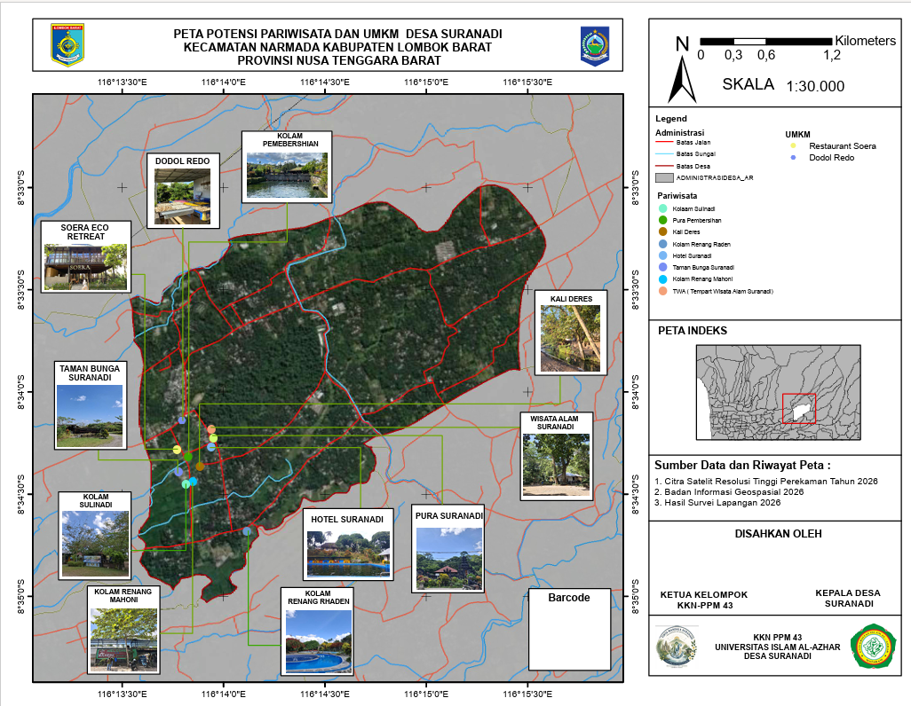

Jelajahi keindahan wisata alam, wisata religi, budaya, dan UMKM Desa Suranadi.
Jelajahi Wisata
Desa Suranadi merupakan salah satu desa wisata di Kecamatan Narmada, Kabupaten Lombok Barat, Provinsi Nusa Tenggara Barat. Desa ini memiliki potensi wisata alam, wisata religi, serta UMKM lokal yang menjadi daya tarik wisatawan.
Website Peta Digital Desa Suranadi dibuat oleh mahasiswa KKN-PPM 43 Universitas Islam Al-Azhar Mataram sebagai media informasi digital yang memudahkan masyarakat dan wisatawan dalam menemukan lokasi objek wisata, UMKM, serta informasi penting lainnya.
Destinasi Wisata
UMKM
Akses Informasi
Jelajahi destinasi wisata terbaik yang ada di Desa Suranadi.
Produk unggulan Desa Suranadi yang menjadi oleh-oleh khas wisatawan.